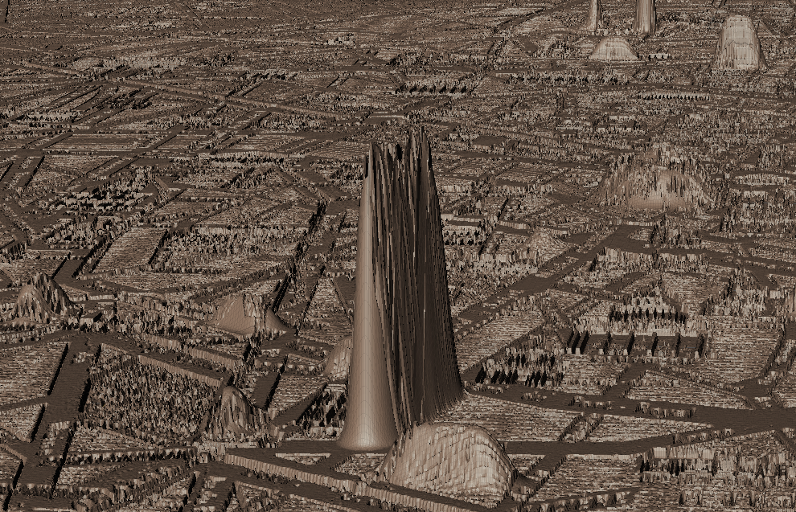

Z-Axis Scholarship:
Modeling How Modernists Wrote the City
Alex Christie and Katie Tanigawa
workflow
Text markup of novel | Image markup of map
workflow
subdivided plane
workflow
displacement map
Carriage Ride
Barnes's version
Carriage Ride
Doctor's version
Barnes's Paris | Rhys's Paris
